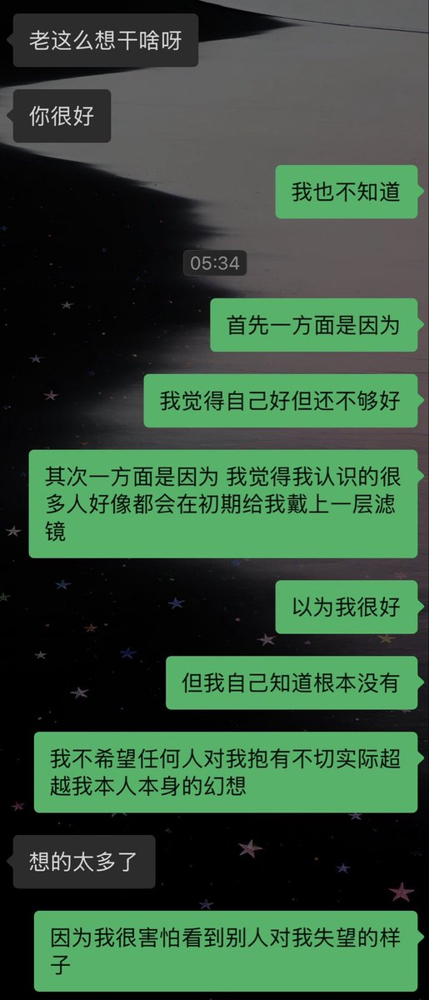
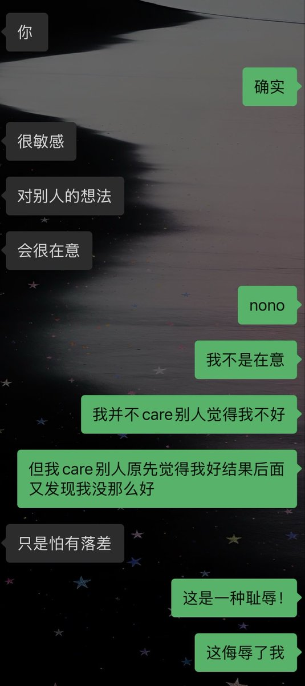

空恋
@kong_lian53017
@dejvvinthenight 我完全懂……一开始就说得很明白自己有不好的点对方非觉得哪都好，相处到后边又要说没想象中那么好。在我看来就是听不懂人话理解能力为0故意恶心我来的🤗


wetislandme
@dejvvinthenight
我能接受别人一开始就觉得我不好
但不能接受别人一开始觉得我很好然后又觉得我不好 https://t.co/npvtespSMr